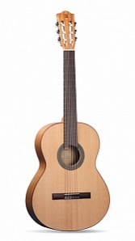

Классическая гитара
Alhambra Flamenco Student 2F
Технические характеристики
| Мензура: | 650мм. |
| Ширина верхнего порожка: | 52мм. |
| Верхняя дека: | массив кедра. |
| Задняя дека и обечайка: | клен явор. |
| Гриф: | красное дерево. |
| Накладка грифа: | индийский палисандр. |
| Колковая механика: | никелированная |
| Гольпеадор: | есть. |
Описание
Отличное качество изготовления и доступность гитар серии Flamenco Student делает их отличным выбором для тех, кто хочет начать обучение игре на фламенко гитаре. С этими инструментами начинающие гитаристы смогут овладеть техникой и стилем, характерными для фламенко.
Модель 2F - замечательная гитара. Отделка с открытыми порами и верхняя дека из массива кедра, звучность этого инструмента привлечет ваше внимание. Очень мощная гитара с истинным звуком фламенко.
Дизайн этой модели особенно тщателен и прост, отличаясь, в то же время, качеством. 2F - хороший вариант для новичков, с отличным соотношением цены и качества.
Верхний и нижний порожки гитары изготовлены из меланина, материала отлично передающего вибрации и создающего округлое, очень сбалансированное звучание.
Кроме того, инструмент отличается грифом ergoneck, более узким, изготовленным из красного дерева, что делает гитару еще более удобной.
Отделка с открытыми порами позволяет уменьшить вес инструмента (что будет очень важно для детей и подростков), а также сделать его еще более красивым.
Мензура: 650мм.
Ширина верхнего порожка: 52мм.
Верхняя дека: массив кедра.
Задняя дека и обечайка: клен явор.
Гриф: красное дерево.
Накладка грифа: индийский палисандр.
Колковая механика: никелированная.
Защитная прозрачная накладка на верхней деке.
Цена
30000 р.